Nuestro álbum

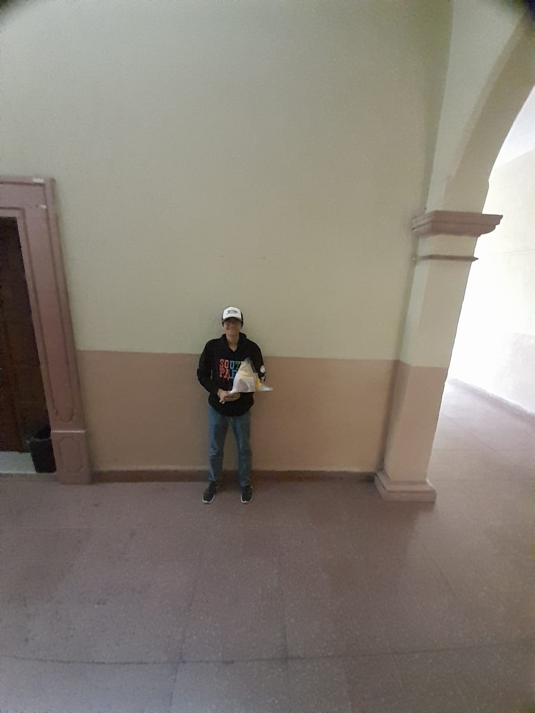


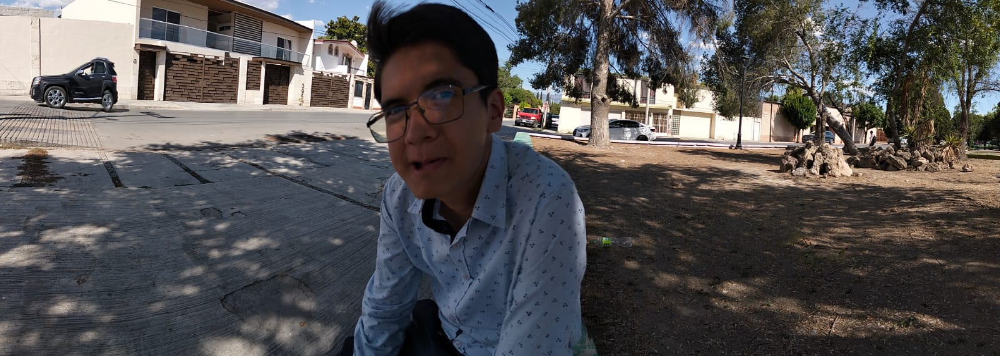
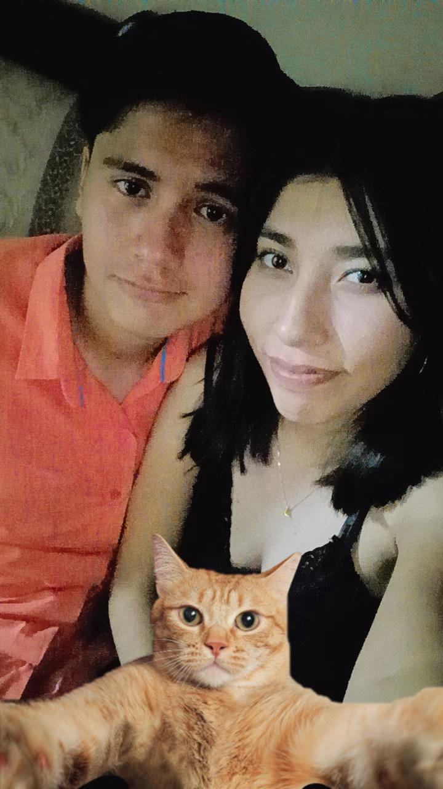


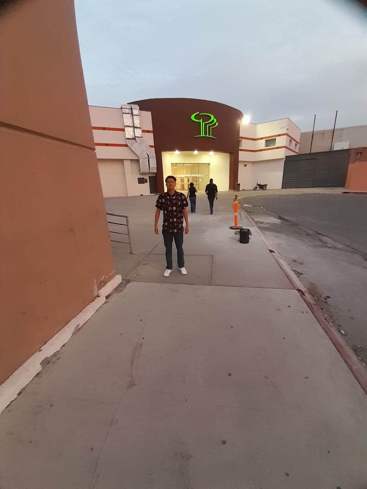
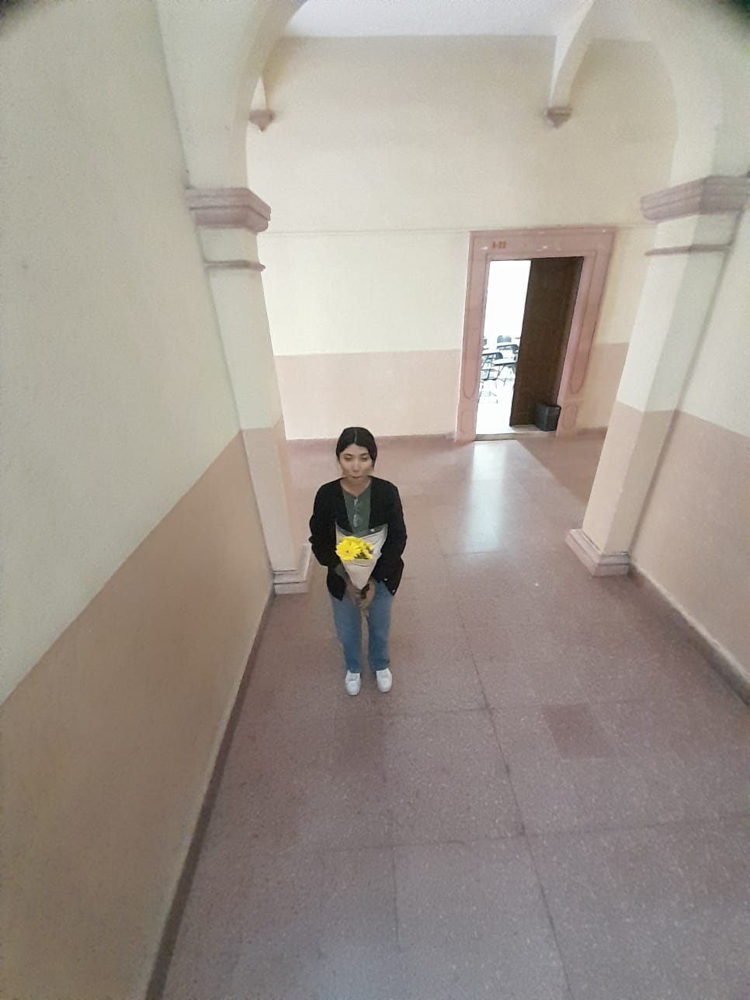


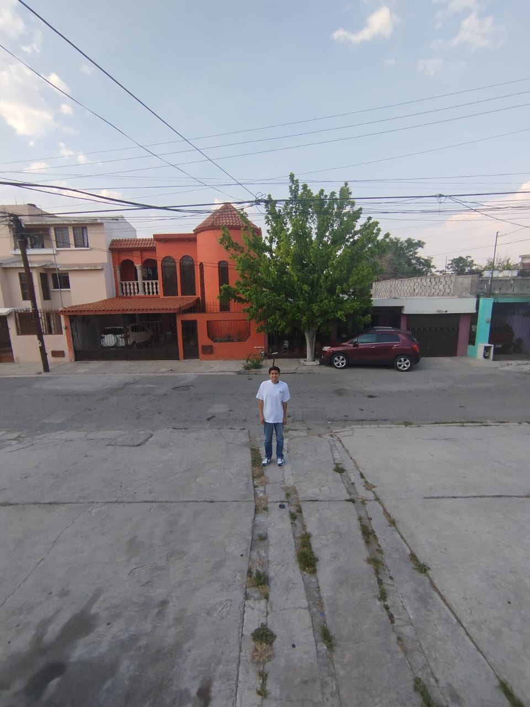


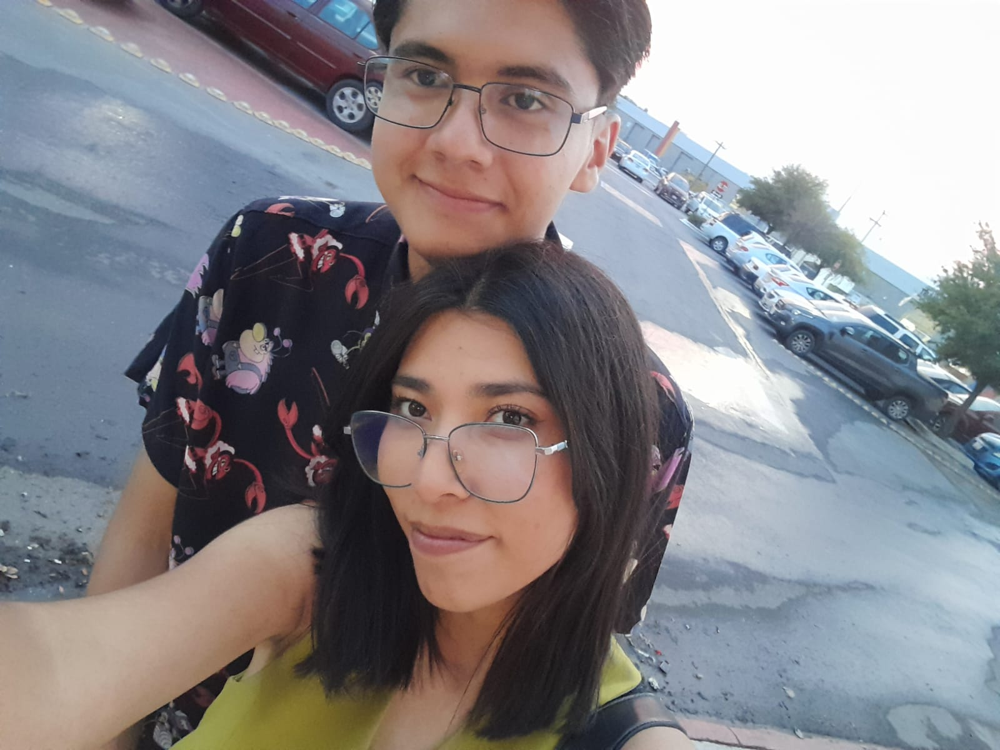
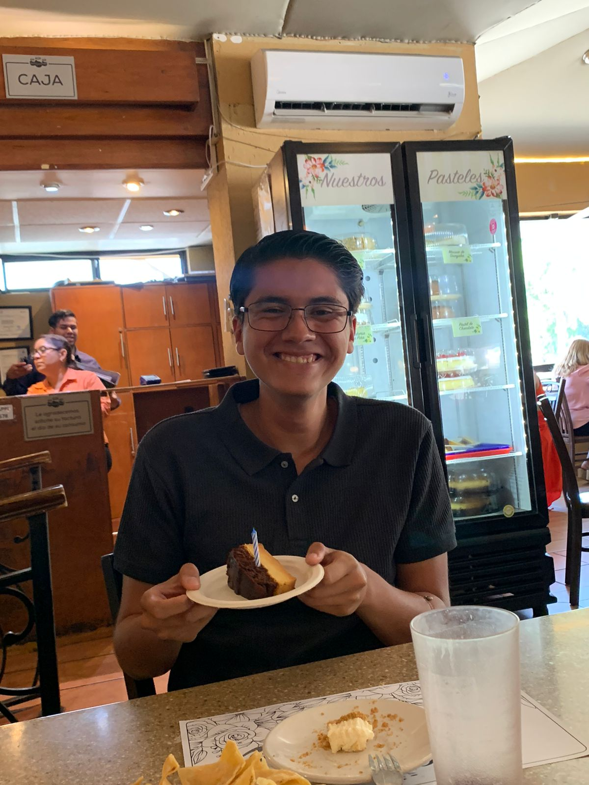

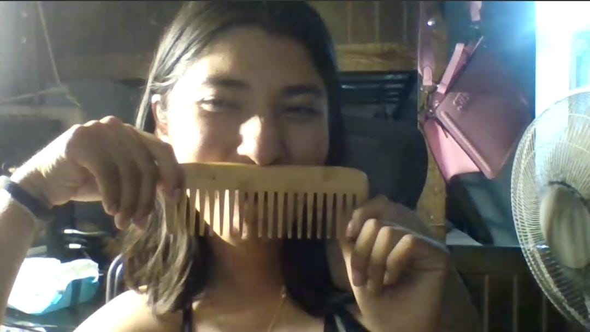


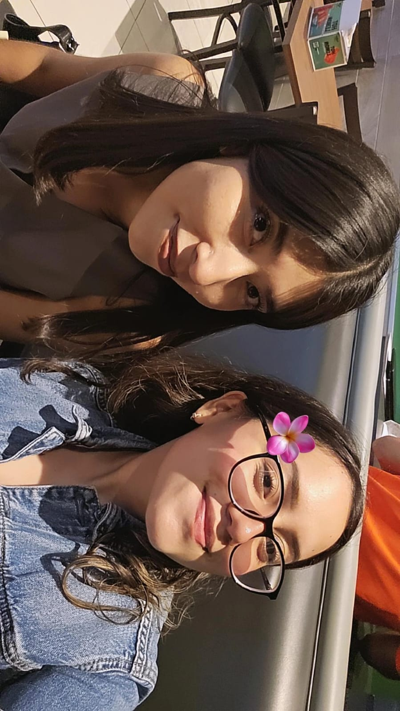


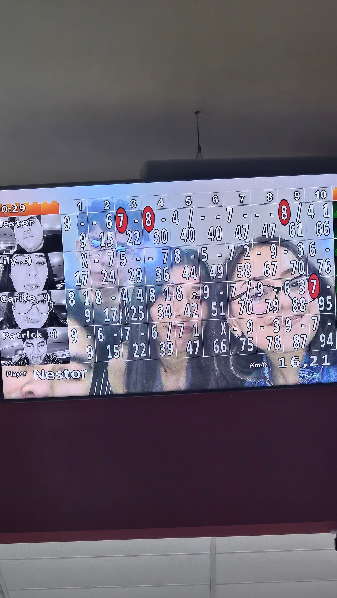


Holap corazón, ya son 6 maravillosos meses y cada uno de ellos los hemos disfrutado como no nos podemos imaginar. Mi vida cambió desde que te conocí, mi mundo tiene los colores más brillantes y radiantes que pueden existir. Cada día le das ese toque único y especial que es parte de ti, llegaste a mi vida para llenarla de momentos inolvidables, perfectos, increíbles, lindos y sobre todo, cada uno de ellos tiene tu esencia.
Cada día recuerdo todos esos momentos en los que hemos estado juntos y como no dar una gran sonrisa, si tú me haces muy feliz y no hay día en el que no sea de esa manera.
Me haces sentir tan amado y con esa intensidad que te caracteriza, eres mi lugar seguro, en donde puedo ser yo sin importar qué, contigo me siento tan seguro, tranquilo y lleno de paz. Eres mi compañera, mi mejor amiga, mi muchacha, el amor de mi vida, mi Lily bonita y déjame decirte que somos el complemento perfecto, somos el uno para el otro.










